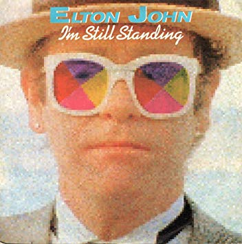

"i'm still standing"
Elton John

You could never know what it's like
Your blood like winter freezes just like ice
And there's a cold lonely light that shines from you
You'll wind up like the wreck you hide behind that mask you use
And did you think this fool could never win
Well look at me, I'm coming back again
I got a taste of love in a simple way
And if you need to know while I'm still standing you just fade away
Don't you know I'm still standing better than I ever did
Looking like a true survivor, feeling like a little kid
I'm still standing after all this time
Picking up the pieces of my life without you on my mind
I'm still standing yeah yeah yeah
I'm still standing yeah yeah yeah
Once I never could hope to win
You starting down the road leaving me again
The threats you made were meant to cut me down
And if our love was just a circus you'd be a clown by now
You know I'm still standing better than I ever did
Looking like a true survivor, feeling like a little kid
I'm still standing after all this time
Picking up the pieces of my life without you on my mind
I'm still standing yeah yeah yeah
I'm still standing yeah yeah yeah
Don't you know I'm still standing better than I ever did
Looking like a true survivor, feeling like a little kid
I'm still standing after all this time
Picking up the pieces of my life without you on my mind
I'm still standing yeah yeah yeah
I'm still standing yeah yeah yeah
I'm still standing yeah yeah yeah
I'm still standing yeah yeah yeah